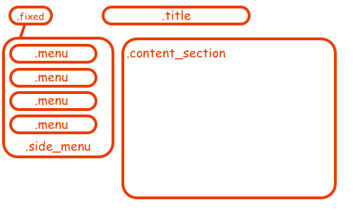
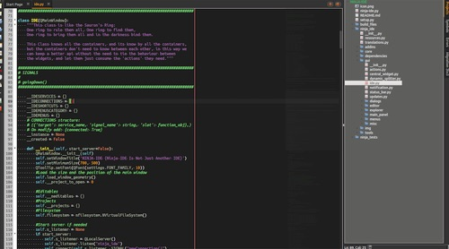
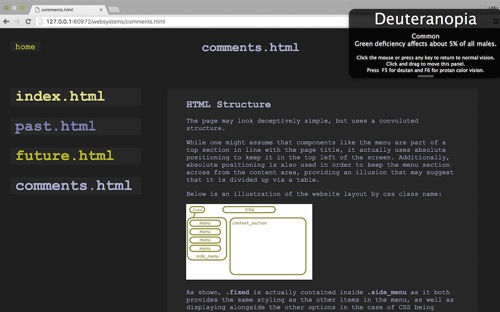

The page may look deceptively simple, but uses a convoluted structure.
While one might assume that components like the menu are part of .image_head, in line with the page title, it actually uses absolute positioning to keep it in the top left of the screen. Additionally, absolute positioning is also used in order to keep the menu section across from the content area, providing an illusion that may suggest that it is divided up via a table.
Below is an illustration of the website layout by css class name:
As shown, .fixed is actually contained inside .side_menu as it both provides the same styling as the other items in the menu, as well as displaying alongside the other options in the case of CSS being turned off.
The previously mentioned .image_head, is a div containing .title that is styled with a span, mostly because it is required by the assignment.
Since the number of colours is a big part of the page aesthetic, I decided the most efficient way to apply colour would be to create a number of colour classes and add them to elements alongside other divs. This was only able to happen due to my discovery that doing this...
class=“style1 style2”
...is legal.
This method has allowed me to keep my CSS somewhat concise considering how much styling has been applied to the page.
As mentioned before, positioning has played a big part in the development of this site, as it is what allows .content_section to scroll, while .side_menu moves with the browser screen focus. This is done by using the positioning type ‘absolute’, which has any element with absolute positioning applied stay in a specified location despite any other elements interaction, or user input (unless otherwise specified). You can see this in action by scrolling on this page.
The stylesheet contains only a handful of ID tags as they are not essential in this website (no Javascript is being used). The only instance in which I use them is for the images, as each image on the website is unique, and has their own stylings seperate.
Finally, I will also mention that the buttons were created using the :hover CSS method, changing colour when the mouse hovers over it.
Aesthetically, the site was created using a stimulus, being themed to be reminiscent of a programming IDE. My decision to do this was influenced by my interest in programming, alongside the subject of Web Systems. It is primarily about coding and UNIX, a topic that has ‘Linux hacker’ written all over it.
The original concept was to do the entire site in black and green, being a throwback to the days in which computer monitors would use this colour scheme to save on power consumption while having the highest contrast levels.
However this changed when I thought that it should be a little more exiting than that colour-wise. If you look at the following image of an IDE...
...you can see that the range of bright colours used upon the dark grey background give it a somewhat playful feel and somehow synergise quite well despite their ‘atonal’ nature.
In terms of layout goals, I decided I wanted to divide the screen into two different sections; one being a menu/page selection list and the other being where the actual page content was displayed. This too is a principle taken from IDEs, as they often have a panel on the left hand side displaying files in a project, with the main content area being on the right (however in the photo above, it’s the other way around).
The naming of the pages was again an idea coming from the theme, being that each page should be a file, so what better way to play on that than to literally use their file extensions in the page titles which you can see is also used in the .side_menu section.
The font was the final piece of the puzzle, being what made the page unmistakably a reference to coding. My choice of Courier New instantly elevated the likeness of the page to an IDE or terminal. The font and its family have long-since been used as a standard for coding-related products, the reason being that it is simple and easy to read at a distance.
There are 3 main types of accessability issues to be considered in web-development:
In terms of visually impaired accessibility, the website is quite good. The two ways I looked at solving this issue was in the use of high contrast colours, as well as the pages ability to be read aloud by a screen reader (usually used by blind individuals).
Luckily, the theme that I was working towards with the aesthetic of the site was created with contrast in mind, and thus all the colours used on the site are easily read by people with low or poor vision.
Furthermore, the contrast to colourblind people for these colours is also excellent. Using a program downloaded from the internet, I was able to temporarily change the colour of my screen to see what the page would look like to colourblind individuals. The program allowed me to cycle through the three most common forms of colourblindness. You can review the results of viewing comments.html in Deuteranopia mode, the most common form of colourblindness (which affects about 5% of all males) below:
I also decided to check the ability of the webpage to be read aloud using a screen-reader. Again, I was surprised at how well it worked, reading out all the page text quite accurately, and I was able to navigate the site with my eyes closed to some extent (probably takes some more practise).
With regard to motor skill impairment such as Parkinson’s Disease or Tremors, I have made the menu buttons quite large, meaning that it would be relatively easy to navigate the site with one of those conditions. The size of elements on the screen is even larger than those on a lot of highly popular sites - Facebook or Google for instance.
Auditory impairment is not an issue as no sounds are played on this site (at Chris Wong’s request).